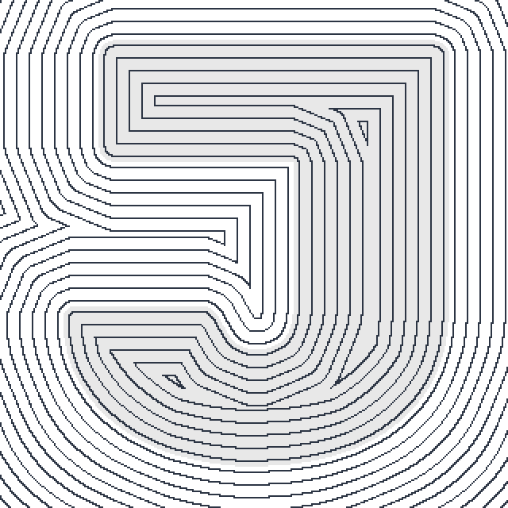
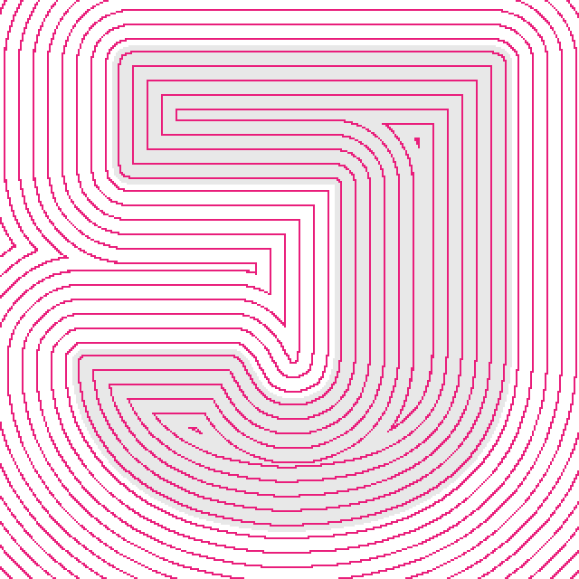
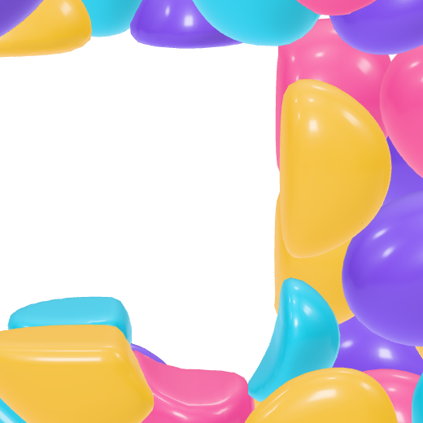
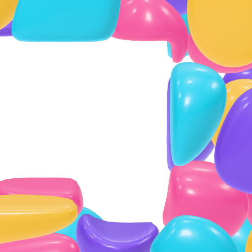

Study 34 · 13 October 2026
Smoother edges, same polygons
You were right: it isn't the mesh. The letter reaches the stones as a distance field made from a 320px bitmap with a chamfer approximation, and that field's contours are octagons. The stones' cut edges and their shading follow it, at any polygon count.
Open the page (edges at the top: as before · exact distance · exact + fine mask)The field, drawn
Contour lines of the same Rubik J, every 8px of distance. Left, the chamfer used since Study 19. Right, the exact Euclidean distance.


The stones, up close
Same seed, forty stones, the mesh as before (res 0.6). Only the field changes.


The whole J
What it costs
| Field | Mask | Triangles | Field | Whole build |
|---|
Open
- Which edges. Exact distance costs nothing in polygons and a few milliseconds; the fine mask costs a little more build.
- Combine with Study 32's finer mesh, or not.
Field numbers: field.json (field.mjs). Test: page-test.mjs, 49 checks in a browser; read by check.cjs.